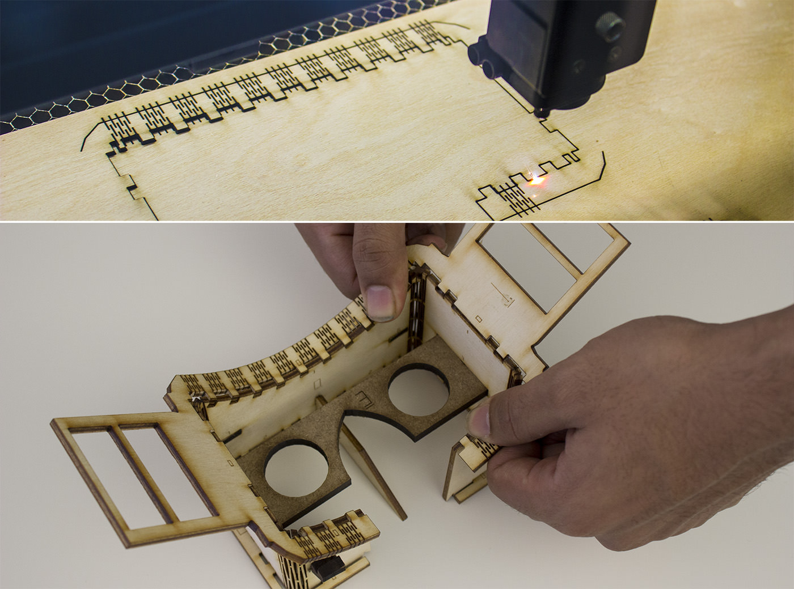
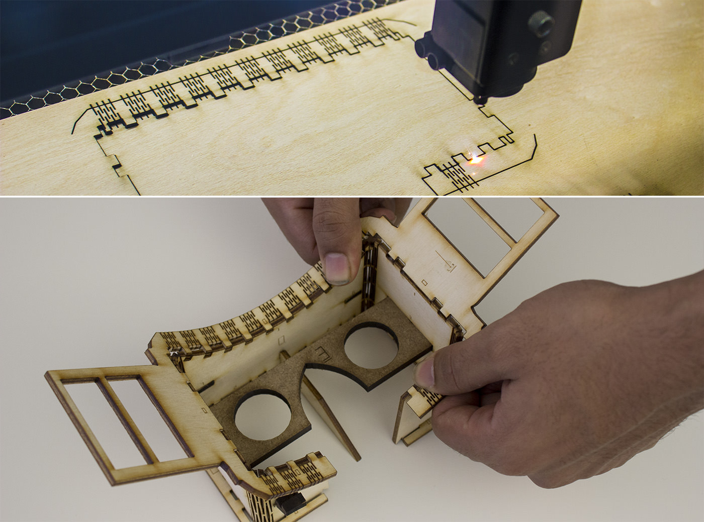

Publication
Beyer, D., Gurevich, S., Mueller, S., Chen, H.T., and Baudisch, P.
Platener: Low-Fidelity Fabrication of 3D Objects by Substituting 3D Print with Laser-Cut Plates.
In Proceedings of
CHI ’15
, pp. 1799-1806.
DOI
Paper
Video
Slides
Press
Video
Slides


Platener:
Low-Fidelity Fabrication of 3D Objects by Substituting 3D Print with Laser-Cut Plates
Platener is a system that allows quickly fabricating intermediate design iterations of 3D models, a process also known as low-fidelity fabrication. Platener achieves its speed-up by extracting straight and curved plates from the 3D model and substituting them with laser cut parts of the same size and thickness. Only the regions that are of relevance to the current design iteration are executed as full-detail 3D prints. Platener connects the parts it has created by automatically inserting joints. To help fast assembly it engraves instructions. Platener allows users to customize substitution results by (1) specifying fidelity-speed tradeoffs, (2) choosing whether or not to convert curved surfaces to plates bent using heat, and (3) specifying the conversion of individual plates and joints interactively.
Platener is designed to best preserve the fidelity of functional objects, such as casings and mechanical tools, all of which contain a large percentage of straight/rectilinear elements. Compared to other low-fab systems, such as faBrickator and WirePrint, Platener better preserves the stability and functionality of such objects: the resulting assemblies have fewer parts and the parts have the same size and thickness as in the 3D model.
To validate our system, we converted 2.250 3D models downloaded from a 3D model site (Thingiverse). Platener achieves a speed-up of 10 or more for 39.5% of all objects.
Figure 2: Platener exports 3D printable parts and laser-cut parts as .stl and .svg files.
Adapting the conversion to the current design phase
To best suit the needs of the current design phase, Platener allows users to convert 3D models under different settings. For an early design phase, for example, users may convert their models with speed in mind; in later phases they may gradually shift the emphasis to fidelity. Note that here fidelity refers not only to shape but also to other physical property such as appearance, structure, and material.
As an example, Figure 3 shows three different versions of the head-mounted display. They were generated from the same 3D model, but with different fidelity-speed settings.
 Figure 3: Platener’s user interface provides users with a global slider to define the fidelity-speed trade-off.
Platener allows users to specify these trade-off settings using a global slider.
Speed-fidelity: Setting this slider all the way to “fidelity” (Figure 4a) produces an object that is all 3D printed, which trivially preserves fidelity, but obviously at the expense of having no speed-up. Moving the slider towards “speed” causes Platener to initially replace very large regions with individual laser-cut plates (Figure 4b); then more and more regions get replaced, resulting in increasingly higher speed-ups (Figure 4c). Platener performs this in interactive speed, i.e., as the user is dragging the slider, Platener continuously updates the model. This allows users to see the changes right away and thus to quickly find the conversion that best suits their needs.
Figure 4: Platener’s user interface provides users with a global slider to define the fidelity-speed trade-off
Curved surfaces: Platener also provides options for handling curved plates. When the curved plate option is deactivated, Platener approximates curved plates using individual plates connected by finger joints (Figure 4c). Activating the curved plate option causes Platener to convert cylindrically curved regions in the 3D model to one plate that can be laser-cut and bent.
Curved plates come in two styles: The first option bend acrylic fabricates a flattened version of the respective surface using the laser cutter that can then be bent using a heat gun. As illustrated by Figure 5, users (a) cut the pieces, (b) heat them up using a heat gun or strip heater, (c) pre-shape them along the dashed instruction lines Platener provided, and (d) press them into the corresponding positions in the model, which gives them the desired shape.
Figure 3: Platener’s user interface provides users with a global slider to define the fidelity-speed trade-off.
Platener allows users to specify these trade-off settings using a global slider.
Speed-fidelity: Setting this slider all the way to “fidelity” (Figure 4a) produces an object that is all 3D printed, which trivially preserves fidelity, but obviously at the expense of having no speed-up. Moving the slider towards “speed” causes Platener to initially replace very large regions with individual laser-cut plates (Figure 4b); then more and more regions get replaced, resulting in increasingly higher speed-ups (Figure 4c). Platener performs this in interactive speed, i.e., as the user is dragging the slider, Platener continuously updates the model. This allows users to see the changes right away and thus to quickly find the conversion that best suits their needs.
Figure 4: Platener’s user interface provides users with a global slider to define the fidelity-speed trade-off
Curved surfaces: Platener also provides options for handling curved plates. When the curved plate option is deactivated, Platener approximates curved plates using individual plates connected by finger joints (Figure 4c). Activating the curved plate option causes Platener to convert cylindrically curved regions in the 3D model to one plate that can be laser-cut and bent.
Curved plates come in two styles: The first option bend acrylic fabricates a flattened version of the respective surface using the laser cutter that can then be bent using a heat gun. As illustrated by Figure 5, users (a) cut the pieces, (b) heat them up using a heat gun or strip heater, (c) pre-shape them along the dashed instruction lines Platener provided, and (d) press them into the corresponding positions in the model, which gives them the desired shape.
 Figure 5: Creating a curved plate from acrylic: (a) cut plate, (b) heat it using a heat gun, (c) pre-curve it, and (d) press it into position to give it the right shape.
The second curved plate option uses a wooden living hinge. As illustrated by Figure 6, for this to work, Platener cuts a dense pattern of living hinges into the plate. This results in a plate that is flexible along the intended dimension. In this case, users only have to (a) cut the curved plate and then (b) mount it using the provided finger joints.

Figure 6: Creating a curved plate from wood. (a) Cut the object on the laser cutter, (b) mount it into position.
As shown in Figure 7, Platener helps users assemble parts by embedding matching pairs of labels.
Figure 5: Creating a curved plate from acrylic: (a) cut plate, (b) heat it using a heat gun, (c) pre-curve it, and (d) press it into position to give it the right shape.
The second curved plate option uses a wooden living hinge. As illustrated by Figure 6, for this to work, Platener cuts a dense pattern of living hinges into the plate. This results in a plate that is flexible along the intended dimension. In this case, users only have to (a) cut the curved plate and then (b) mount it using the provided finger joints.

Figure 6: Creating a curved plate from wood. (a) Cut the object on the laser cutter, (b) mount it into position.
As shown in Figure 7, Platener helps users assemble parts by embedding matching pairs of labels.
 Figure 7: Platener 3D prints/engraves instructions.
Figure 7: Platener 3D prints/engraves instructions.